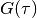
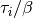
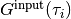
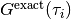
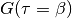
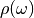
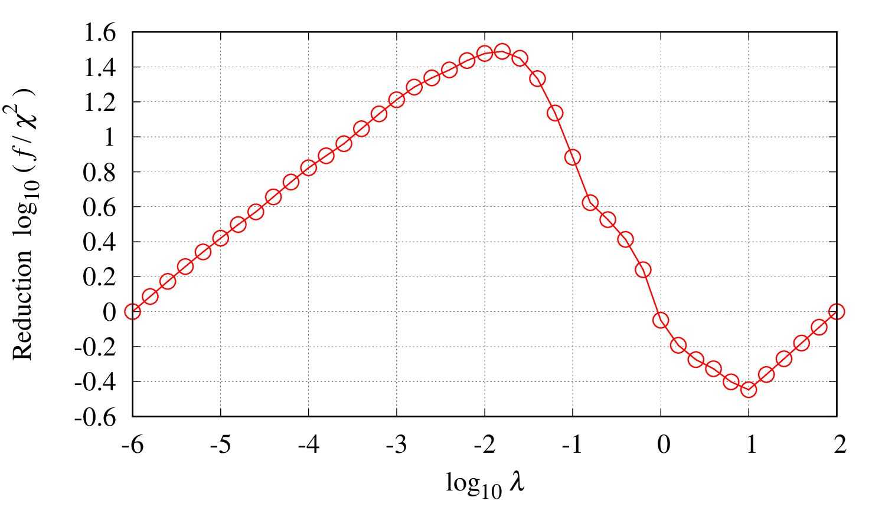
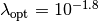
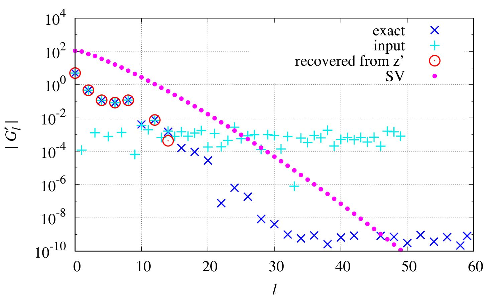
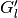

2. Tutorials¶
Sample data are provided both for fermionic and bosonic cases:
samples/fermion# a sample for fermionic spectrum (data in the article)samples/boson# a sample for bosonic spectrum
Here, an explanation is given for the fermionic case.
2.1. Script¶
User can execute all the steps explained below using a single script file run.sh.
Edit some variables in the top of the script (explained later) and then run the script by
$ ./run.sh
If succeeded, text files containing numerical data and graphs in EPS format are generated in output directory.
There are some parameters to control the behavior of the script;
# =========================
file_exe="../SpM.out"
dir_plt="../plt"
plot_level=1 # 0: no plot, 1: plot major data, 2: plot all data
eps_or_pdf='eps' # 'eps' or 'pdf' (epstopdf is required)
# =========================
The fist one must be modified, at least, before running.
2.2. Make input files¶
Green’s function
Input data for the imaginary time Green’s function  should be provided on a linearly discretized mesh between
 and
and  .
The file
.
The file Gtau.incontains sample data in the following manner#beta=100.000000 #omega_max=4.000000 0.0 -0.500733991018 -0.499999977255 0.00025 -0.490129692246 -0.489780138726 0.0005 -0.481350067927 -0.47987901351 0.00075 -0.471476482364 -0.470285052549 0.001 -0.46176235397 -0.460987168435 ... 0.999 -0.461487347988 -0.460987168435 0.99925 -0.467256984842 -0.470285052549 0.9995 -0.479129683576 -0.47987901351 0.99975 -0.490428417896 -0.489780138726 1.0 -0.499812460744 -0.499999977255
Lines beginning with ‘#’ are skipped. There are 3 columns, which corresponds to , , and .
SpMprogram actually reads only one column, in this case, the second column containing . User is requested to specify withcolumnparameter which column should be read. Note that the value of  needs to be given in order to evaluate the integral intensity of . It means that the integrated intensity is not necessarily be equal to 1 (0 for off-diagonal Green’s function and some finite value for the self energy).Parameters
Parameters are passed to the
SpMprogram by a text file. The fileparam.inshows a setting used in obtaining the demonstrative results;# INPUT/OUTPUT statistics="fermion" beta=100 filein_G="Gtau.in" column=1 fileout_spec="spectrum.dat" # OMEGA Nomega=1001 omegamin=-4 omegamax=4 # ADMM lambdalogbegin=2 lambdalogend=-6 tolerance=1e-10 maxiteration=1000
As in Gtau.in, lines beginning with ‘#’ are skipped. For details of each parameter and further optional parameters, see Input files
2.3. Run SpM¶
In the directory samples/fermion/, just type the command
$ build_directory/src/SpM.out -i param.in
2.4. Results¶
Results are stored as ordinary text format in output directory.
See Output files for details of each file.
2.5. Plot¶
User can generate graphs either in EPS format or in PDF format using gnuplot.
Move into directory output, and type
gnuplot path_to_SpM/samples/plt/*
to generate EPS files of main results. If you prefer PDF format, put flag_pdf=1 option as
gnuplot -e flag_pdf=1 path_to_SpM/samples/plt/*
Note that it requires epstopdf program in the PATH.
Next, move into directory lambda_opt and type
gnuplot path_to_SpM/samples/plt/lambda_opt/*
Detailed results for the optimal value of  are then plotted.
Again, the option
are then plotted.
Again, the option flag_pdf=1 may be put to obtain PDF files.
Let us look at some graphs below.
spectrum.eps
The final result for the spectrum is given in the file
output/spectrum.eps.
The red line shows the computed spectrum, and the blue line shows the exact spectrum, which is provided in the file
Gtau.in.dos(not output of theSpMprogram).find_lambda_opt.eps
User should check how the regularization parameter
 is determined and whether the choice is reasonable.
Loot at the file output/find_lambda_opt.epsThe peak position gives the optimal choice . If the peak is not clear, the choice might not be reasonable. In this case, accuracy of the input should be improved.
y_sv-log.eps
One can see how much information in the input data is used for constructing the spectrum. See the file
output/lambda_opt/y_sv-log.epsThe light blue points show the input data  transformed into the SVD basis, and red circles are data used in computing above. The blue points show, for comparison, the exact without noise, which is provided in the file
Gtau.in.sv_basis(not output of theSpMprogram).